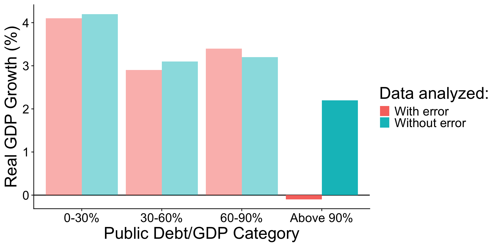

BIOL 220 Introduction
About me
Setting our intentions
`A`a i ka hula, waiho ka hilahila i ka hale
Setting our intentions
`A`a i ka hula, waiho ka hilahila i ka hale
Ka hua `ōlelo o ka ha`awina:
Course objectives
Students will be able to:
- apply statistical knowledge to analyze data and answer biological questions
- communicate and report data visually, orally, and in writing
- apply their knowledge to areas of personal interest such as conservation, sustainability, and health
- identify racist and colonial legacies in biostatistics and ways to positively intervene to stop the perpetuation of those legacies
What is statistics?
What is statistics?
Statistics is the study of methods to describe, measure, and test hypotheses about nature from samples. Statistics gives us tools to describe the uncertainty of measurements and the scientific insights we seek to gain from those measurements.
What is statistics?
Comes down to one question:
Sure?
Goals of statistics
- Estimation
- Hypothesis testing
Biology is messy
Three sources of variation:
Adapted from www.statstree.org
Biology is messy
Biology is messy
Biology is messy
What are the sources of variation?
What are the sources of variation?
Syllabus
On Google Classroom
Break!
Logistics
- In lab you will be registering for a Koa server account (make sure to do this!)
- Nothing else due this week :)
Learning Objectives
- Know why and how biologists use statistics
- Explain variables in your data
- Randomly sample a population
- Organize data in a spreadsheet (first thing next week)
Key terms are highlighted
1. Know why and how biologists use statistics
You should be able to:
- Define statistics as the measurement of uncertainty and pursuit of insights in light of uncertainty
- Describe sources of uncertainty
- Describe uncertainty in terms of and
- Describe the goals of statistics as and
- Formulate parameters to estimate and statistical hypotheses to test
- Distinguish between a and a
- Distinguish between a and an
What is statistics?
Statistics is the study of methods to describe, measure, and test hypotheses about nature from samples. Statistics gives us tools to quantify the uncertainty of measurements and the scientific insights we seek to gain from those measurements.
What is statistics?
Comes down to the question:
Sure?
Goals of statistics
- Estimation
- Hypothesis testing
is the process of inferring an unknown quantity of a using data
: all individual units in a collective (e.g. trees in a forest, cells in a body, genes in a genome, etc.)
: a subset of the population
Parameter vs. Estimate
A is a quantity describing a , whereas an or a is a related quantity calculated from a sample
: the “Truth” about a
(aka ): what we calculate from a that represents our best guess of the parameter value
Parameters
: Body sizes of uhu
Look around and find the uhu, measure them (to nearest mm), record the data in google classroom

: Distinguishing and
Example: Uhu body size
- What could the be?
- What could a be?
: Distinguishing and
Example: Uhu body size
- What is the ?
- There’s some ambiguity to it
- Could be all the “uhu” in the classroom (we just extirpated the population…not ethical)
- Could be all the uhu in near shore O`ahu waters
- Could be all the uhu that could hypothetically ever exist given current conditions
- What is a ?
- Depends to an extent on our choice of how we define population
- Could be the data from one section
- Could be the data from all sections combined (but only if we don’t define the population as all the “uhu” in the classroom)
: Distinguishing and
Example: Uhu body size
- What would be a useful to describe some aspect of the population?
- What is the of that parameter?
: Distinguishing and
Example: Uhu body size
- What would be a useful to describe some aspect of the population?
- mean (aka average, aka expected value) of body length
- What is the of that parameter?
- estimate is our best guess of the true, unknowable parameter value
- we make this “guess” with the data from our sample
Sources of variation
Hypothesis testing
A is a proposition about how the world works
A is a specific claim regarding a population parameter.
A is related to but generally more specific than a scientific hypothesis
Comparing scientific and statistical hypotheses
Example: Uhu body sizes
are propositions about how the world works
Uhu have gotten smaller in waters around Hawai`i due to over-harvest and pervasive ecosystem degredation.
are related, but specific about population parameters
The mean length of the contemporary uhu population is smaller than the historical baseline mean of 550 mm (\((\mu_\text{now} - \mu_\text{past}) < 0\))
2. Explain variables in your data
You should be able to:
- Define
- Distinguish , , and variables
- Distinguish and variables
What is a ?
are characteristics that could differ among individuals or other sampling units
We distinguished , , and variables
data are qualitative characteristics of individuals that do not have magnitude on a numerical scale
data are quantitative measurements that have magnitude on a numerical scale
data are qualitative measurements, but ordered
vs. variables
Variables can be either or variables
variables are hypothesized to cause, directly or indirectly, a change in a variable
vs. variables
Typical notation:
Just because a statistical model says \(X\) “causes” \(Y\), it doesn’t necessarily mean it’s true
3. Randomly sample a population
You should be able to:
- Know that a good sample is precise and unbiased
- Distinguish the and of a sample
- Know that a involves equal chance and independence
- Identify sources of bias in a nonrandom sample
Why sample?
We don’t have time, budget, ability to measure every unit in a population
: Random and indipendent samples
Example: Uhu body sizes
- If we treat all the “uhu” scattered around the classroom as the and the data collected by each of the 5 sections as 5 , are the samples ?
- Are the samples ?
- What types of processes or mistakes could lead to non-random and/or non-independent samples?
Why do we care?
Whether or not samples are and impacts the reliability of our answer to the foundational question: Sure?
That happens due to:
- Inaccurate assessment of uncertainty: non-random and non-independent samples artificially decrease uncertainty
- Change in precision
- Change in bias
Properties of a good sample
- We cannot eliminate biological variation or sampling error
- The best we can do is produce precise and unbiased estimates

Precision versus bias
These sets of estimates are equally precise, but the first is biased
| Biased | Estimate | Parameter | Error |
|---|---|---|---|
| 2 | 1 | 2 - 1 = +1 | |
| 3 | 2 | +1 | |
| 4 | 3 | +1 | |
| 5 | 4 | +1 |
| Unbiased | Estimate | Parameter | Error |
|---|---|---|---|
| 0 | 1 | 0 - 1 = -1 | |
| 3 | 2 | +1 | |
| 2 | 3 | -1 | |
| 5 | 4 | +1 |
Obtaining good samples
Decreasing variance increases precision
- Reduced measurement error
Large samples increase precision by decreasing sampling error
But very precise measurement and large samples can still be biased!
- In fact, large sample size reinforces bias
Random sampling leads to unbiased estimates
samples
A sample is random if two criteria are met:
Every unit in the population has an of being sampled
The probability that one unit is sampled is of another unit being sampled
samples
samples
samples
4. Organize data in a spreadsheet
4. Organize data in a spreadsheet
You should be able to:
- Organize data into a spreadsheet that is machine- and human-readable following principles of Broman & Woo (2018)
“The Great Recession”
Policy responses to “The Great Recession”
- Governments should go into debt to temporarily increase economic demand
- e.g. American Recovery and Reinvestment Act (ARRA)
- Governments should NOT go into debt because it would cause economic growth (GDP) to decline
- key evidence for effect of debt on growth came from Reinhart & Rogoff (2010)
Reinhart & Rogoff (2010) argued that GDP stops growing when government debt hits 90% of GDP
An error in Excel caused the apparent decline at 90% of GDP
Source: https://qz.com/75119/how-to-avoid-making-an-excel-mistake-like-rogoff-and-reinhart/
No major decline in GDP Growth when debt exceeds 90%

Organize your data and show your work
- Without data organization and validation, anyone can make serious statistical errors
- Organize your data: adopting the correct principles will help you avoid serious errors
- Show your work: a script shows exactly which steps you took and allows anyone else to reproduce your work
Activity: Identify at least two deviations from the principles of Broman & Woo (2018)
- Consistent codes for categorical variables
- Uses NA for missing data where applicable
- Consistent variable names
- Consistent subject identifiers
- Dates written in YYYY-MM-DD format
- No leading or trailing white space
- No empty cells
- One item per cell
- Data are rectangular
- No calculations in raw data file
- No font color or highlighting as data
Activity: Identify at least two deviations from the principles of Broman & Woo (2018)
- Consistent codes for categorical variables
- Uses NA for missing data where applicable
- Consistent variable names
- Consistent subject identifiers
- Dates written in YYYY-MM-DD format
- No leading or trailing white space
- No empty cells
- One item per cell
- Data are rectangular
- No calculations in raw data file
- No font color or highlighting as data